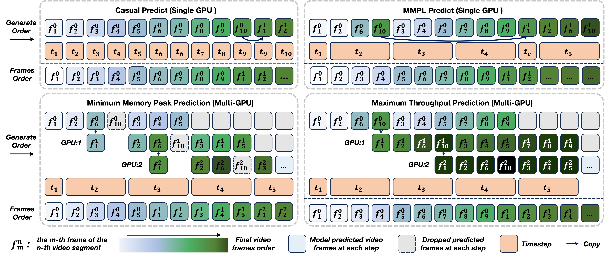

TL;DR
We propose a novel plan-then-populate framework centered on Macro-from-Micro Planning (MMPL) for scalable, high-quality long video generation. Experiments on standard benchmarks confirm that our method outperforms existing video generation models in quality and stability.

Macro-from-Micro Planning (MMPL): a novel long-video generation paradigm that mitigates temporal drift and color shift, while enabling multi-GPU parallelization to generate longer videos.
Macro-from-Micro Planning Framework
Overall framework of Macro-from-Micro Planning. Our method operates on two planning levels: (1) Micro Plans, which predict a sequence of future frames within each segment to mitigate local error accumulation, and (2) a Macro Plan, formed as an Autoregressive Chain of Micro Plans, where the planning frames of the first segment autoregressively generate the planning frames of subsequent segments, ensuring long-horizon temporal consistency.
Adaptive Workload Scheduling for Long Videos
Adaptive Multi-GPU Workload Scheduling for Balanced Execution and Fast Autoregressive Video Generation.
Long-Time Video Generation
Our model generates high-quality 480P videos and supports streaming generation for extended durations. Below, we present 20-second videos (top), extended 30-second videos (middle), and 1-minute videos (bottom), all produced by our model without noticeable drift or color shift across time. [More Examples]
Longer and Better
Our method delivers substantially superior performance on 30-second long video generation, surpassing MAGI, SkyReels, CausVid, and Self-Forcing in both visual quality and temporal consistency. It robustly mitigates frame drift and flickering, while effectively addressing over-saturation and color imbalance, resulting in more stable and photorealistic outputs.
Limitation: Extrapolation Quality
While Self Forcing addresses exposure bias and we observe no error accumulation within the video length the model is trained on (5 seconds), we still observe quality degradation when extrapolating beyond its training horizon. Below we show 30-second videos generated via sliding window extrapolation.
BibTeX
@article{zhang2025proteus,
title={Macro-from-Micro Planning for High-Quality and Parallelized Autoregressive Long Video Generation},
author={Xunzhi Xiang and Yabo Chen and Guiyu Zhang and Zhongyu Wang and Zhe Gao and Quanming Xiang and Gonghu Shang and Junqi Liu and Haibin Huang and Yang Gao and Chi Zhang and Qi Fan and Xuelong Li},
journal={arXiv preprint arXiv:2508.03334},
year={2025}
}